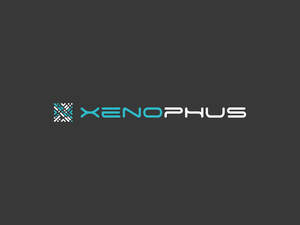

Trade Mark Journal No.2026/010 6 March 2026
UK00004343722 22 February 2026 (35,38,42,45)

- Class 35
- Sales promotions at point of purchase or sale, for others; Design of advertising logos; Banner advertising; Design of advertising flyers; Design of advertising brochures; Advertising services to create corporate and brand identity; Design of advertising materials; Graphic advertising services; Advertising services to create brand identity for others; Brand positioning; Brand creation services; Brand strategy services; Brand testing; Brand creation services (advertising and promotion); Brand evaluation services; Business assistance relating to corporate identity; Digital marketing; Marketing; Advertising and marketing; Promotional marketing; Distribution of advertising, marketing and promotional material; Advertising, marketing and promotional services; Advertising, promotional and marketing services; Marketing, advertising, and promotional services; Advertising and marketing services; Advertising and marketing consultancy; Dissemination of advertising, marketing and publicity materials; Online marketing; On-line advertising and marketing services; Advertising, marketing and promotion services; Marketing, advertising and promotion services; Advertising copywriting; Promotional marketing services using audiovisual media; Consultancy services relating to advertising, publicity and marketing; Promotion, advertising and marketing of on-line websites; Financial marketing; Digital advertising services; Marketing services; Internet marketing; Marketing consultancy; Direct marketing; Distribution of advertising brochures; Referral marketing; Influencer marketing; Design of marketing surveys; Distribution of printed advertising matter; Business marketing services; Direct marketing services; Business marketing consultancy; Advertising, marketing and promotional consultancy, advisory and assistance services; Marketing consulting; Promotion [advertising] of business; Direct marketing consulting; Advertising and promotional services; Promotional and advertising services; Promotional advertising services; Advertising and publicity services; Research services relating to advertising and marketing; Distribution of flyers, brochures, printed matter and samples for advertising purposes; Sales promotion using audiovisual media; Dissemination of advertising and promotional materials; Advertising and marketing services provided via communications channels; Distribution of advertising mail and of advertising supplements attached to regular editions; Event marketing; Marketing information; Advertising and publicity; Publicity and advertising; Marketing forecasting; Advertising flyer distribution; Distribution of advertising materials; Advertising and marketing services provided by means of social media; Modeling services for advertising or sales promotion; Database marketing; Marketing assistance; Advertising services for the promotion of e-commerce; Affiliate marketing; Dissemination of advertising material [leaflets, brochures and printed matter]; Trade marketing [other than selling]; Business marketing consulting services; Dissemination of advertising material [leaflets, brochure and printed matter]; Publicity and sales promotion services; Marketing research; Developing promotional campaigns for business; Marketing research services; Online advertising; Advertising; Business marketing consultation services; Advertising text publication services; Marketing management advice; Telephone marketing services [not selling]; Consultancy services in the field of affiliate marketing; Direct mail advertising services; Marketing services provided by means of digital networks; Customer club services, for commercial, promotional and/or advertising purposes; Production of advertising materials; Advertising, promotional and public relations services; Electronic publication of printed matter for advertising purposes; Marketing the goods and services of others by distributing coupons; Distribution of publicity materials, namely, flyers, prospectuses, brochures, samples, particularly for catalogue long distance sales [whether crossborder or not]; Online advertising services; Web site traffic optimization; Providing business information via a web site; Website traffic optimization; Website traffic optimisation; Marketing services in the field of web site traffic optimization; Providing a searchable online advertising guide featuring the goods and services of other on-line vendors on the internet; Business information services provided on-line from a computer database or the internet; Business information services provided online from a computer database or the internet; Promoting the designs of others by means of providing online portfolios via a website; Advertising the goods and services of online vendors via a searchable online guide; Providing marketing consulting in the field of social media; Organisation of promotions using audio-visual media; Provision of advertising space on electronic media; Online retail services for downloadable digital music; Presentation of companies on the Internet and other media; Dissemination of advertising via online communications networks; Advertising consultation; Business consultation; Creative marketing plan development services; Marketing consultation services; Corporate image development consultation; Professional business consultancy; Business consultancy (Professional -); Business process management consultancy; Assistance, advisory services and consultancy with regard to business analysis; Assistance, advisory services and consultancy with regard to business management.
- Class 38
- Providing access to an Internet discussion website; Web site forwarding services; Provision of access to web pages; Access to content, websites and portals; Wireless digital messaging services; Digital audio broadcasting; Delivery of digital audio and/or video by telecommunications.
- Class 42
- Website design; Homepage and webpage design; Website hosting services; Website design services; Web site design; Computer website design; Web site hosting services; Website design consultancy; Web site design services; Internet web site design services; Web site design consultancy; Web page design services; Website development services; Hosting an online website for creating and hosting micro websites for businesses; Webpage design services; Website design and development; Web site design and creation services; Website development for others; Hosting web sites; Hosting of web sites; Hosting of websites; Hosting websites; Web portal design; Hosting of customized web pages; Web hosting; Hosting websites on the Internet; Design of web sites; Design of home pages and web sites; Design of homepages and websites; Design of websites; Design of web pages; Maintenance of websites and hosting on-line web facilities for others; Providing information in the field of interior design via a web site; Graphic design for the compilation of web pages on the internet; Rental of software for website development; Website usability testing services; Hosting web portals; Hosting of web portals; Hosting of mobile websites; Hosting computer websites; Creation of internet web sites; Website load testing services; Computer site design; Hosting online web facilities for others for sharing online content; Compilation of web pages for the Internet; Design and updating of home pages and web pages; Providing information in the field of interior design via a website; Design and creation of homepages and web pages; Providing temporary use of on-line non-downloadable software for web site development; Programming of software for website development; Providing information in the field of architectural design via a website; Web hosting services; Creating electronically stored web pages for online services and the internet; Design and development of homepages and websites; Hosting on-line web facilities for others; Programming of web pages; Hosting the web sites of others; Providing temporary use of non-downloadable software applications accessible via a web site; Commissioned writing of computer programs, software and code for the creation of web pages on the Internet; Hosting the computer sites (web sites) of others; Providing information relating to computer technology and programming via a website ; Providing information relating to computer technology and programming via a website; Programming of customized web pages; Hosting a website for the electronic storage of digital photographs and videos; Consultancy relating to the design of home pages and Internet sites; Design and construction of homepages and websites; Design of homepages and Internet pages; Providing information on clinical studies via an interactive website; Consultancy relating to the design of homepages and Internet pages; Consultancy with regard to webpage design; Hosting on-line web facilities for others for managing and sharing on-line content; Design and graphic arts design for the creation of web pages on the Internet; Design, creation and programming of web pages; Installing web pages on the internet for others; Creating websites; Design and creation of web sites for others; Design and creation of homepages and Internet pages; Designing websites for advertising purposes; Consultancy relating to the creation and design of websites for e-commerce; Design of Internet pages; Interactive hosting services which allow the users to publish and share their own content and images online; Design and creating web sites for others; Creation and maintenance of web sites; Design and development of software for website development; Design of logos for t-shirts; Logo design services; Design of logos for corporate identity; Design of graphics and of livery for corporate identity; Design of brand names; Brochure design; Graphic design; Graphic illustration design; Hat design; Design of typefaces; Graphic illustration design services; Brand design services; Design of post card cartoon characters; Design of stationery; Graphic design services; Packaging design; Design of packaging; Design of trade marks; Product design; Business card design; Design of printed material; Illustration services (design); Design of printed matter; Graphic art design; New product design; Graphic designing; Design of clothing; Design of products; Design services (Packaging -); Design services for packaging; Packaging design services; Design services relating to window graphics; Computer graphics design services; Computer-aided design of video graphics; Graphic arts design; Design (Graphic arts -); Image processing software design; Software as a service [SaaS] featuring software platforms for graphic design; Design of costumes; Product design services; Development and design of digital sound and image carriers; Design of puppets; Design of artwork; Visual design; Computer specification design; Fashion design; Packaging design for others; Industrial packaging design services; Construction design; Design services; Design and development of software for instant messaging; Consultancy relating to selection of furnishing fabrics [interior design]; Consumer product design; New products (Design of -); Design and development of new products; Product design and development; Design and development of consumer products; Design and testing for new product development; Design and graphic arts design for the creation of web sites; Analysis of product design; Design and development of new technology for others; Clothing design services; Design services for clothing; Design of models; Design consultancy; Design and development of industrial products; Design services relating to packaging; Custom design services; Business card design services; Design of headgear; Jewellery design services; Architectural design services; Packaging designs; Design of clothing accessories; Intranet design, development and maintenance; Design services relating to shop interiors; Commercial interior design; Graphic design of promotional materials; Dress design; Architectural design; Design of prototypes; Jewelry design; Architectural design for exterior decoration; Industrial and graphic art design; Design consultation; Consultancy relating to the design of packaging; Kitchen design; Design planning; Design and development of electronic database software; Database design; Development, design and updating of home pages; Platforms for graphic design as software as a service [SaaS]; Consultancy relating to the creation and design of websites; Design of home pages; Design of ornamental layouts; Design of layouts for offices; Design and development of multimedia products; Building design services; Design of engineering products; Design of china; Design and development of computer firmware; Research relating to the development of computer software; Development of engines; Design and development of databases; Planning, design, development and maintenance of online websites for third parties; Product research and development; Design and development of networks; Design and development of Internet security programs; Software development in the framework of software publishing; Computer system design and development; Custom design of software packages; Customized design of computer hardware; Consultancy and information services relating to the design, programming and maintenance of computer software; Creating and maintaining customized web pages; Design, creation, hosting and maintenance of websites for others; Installation and customisation of computer applications software; Conversion of data or documents from physical to electronic media; Art work design; Consultancy services relating to environmental planning; Design of audio-visual creative works; Consultancy services relating to design.
- Class 45
- On-line social networking services; Internet-based social networking services.
Lee Robertson